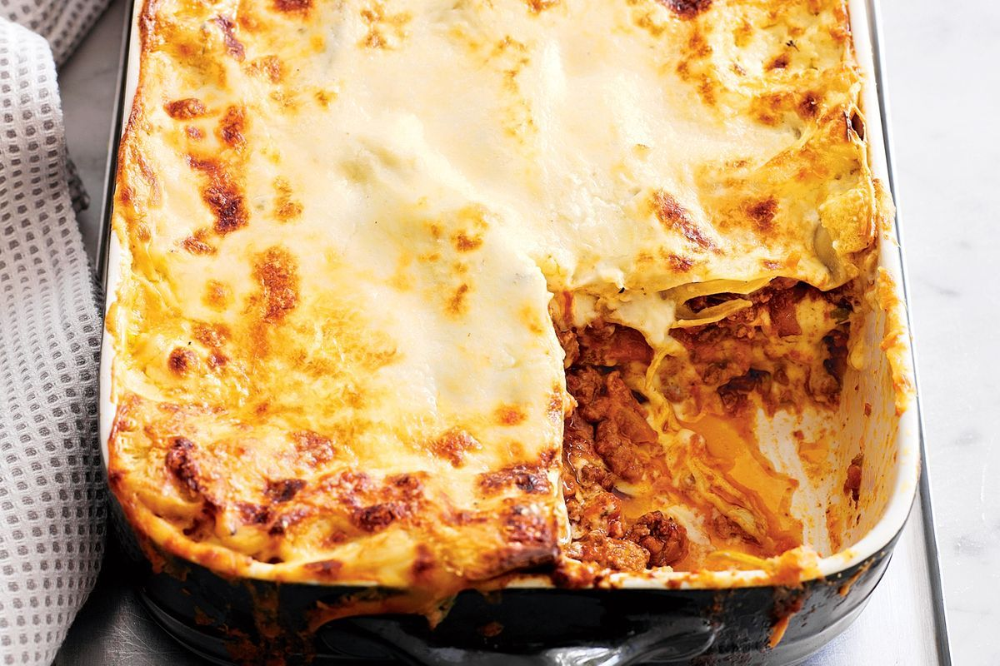

Lasagne

Lasagne, (sometimes spelt Lasagna if you're wrong) is a pasta dish that was invented by the Romans and then went through like 5 million iterations until we get the lasagne that we all know today.
Lasagne is the perfect cure for everything. Hungover? Miserable? Overweight? These layers upon layers of carbs, meat, and a thick cheese sauce will not really contribute to your overall health, but it does taste pretty damn good.
You will need:
- Over half a kilo of ground meat. Beef, pork, lamb, anything goes
- 2 packs of Pancetta or bacon lardons
- 2 Onions, diced
- Several chopped mushrooms. Maybe 8?
- At least 3 cloves of garlic, crushed. The more the merrier!
- Red wine
- Beef stock
- 2 tins of chopped tomatoes
- Pre-made bechamel sauce (i'm lazy)
- Salt, pepper, italian herbs
Directions:
- Start by frying the meat in a large saucepan. Drain the fat that comes off.
- Add the pancetta and cook till that's turned a bright pink. Then add all the onion and mushroom.
- Add stock, crush some garlic in. Then add your salt, pepper and the herbs.
- Add the tomatoes, pour some wine in. Let that simmer for a while.
- Take a swig of that wine while you're at it
- Ok now set your oven to something in the range of 200 celcius and then grease a baking tray. Then put lasagne sheets in and pour the sauce over it, layering it so you do the pasta and then the sauce and then the pasta. etc. etc. you get the picture
- just lather that bad boy with some bechamel sauce and bake for 30 mins
- Eat it out the baking tray. Also, eat so much that you feel uncomfortable by the end.
Back to homepage